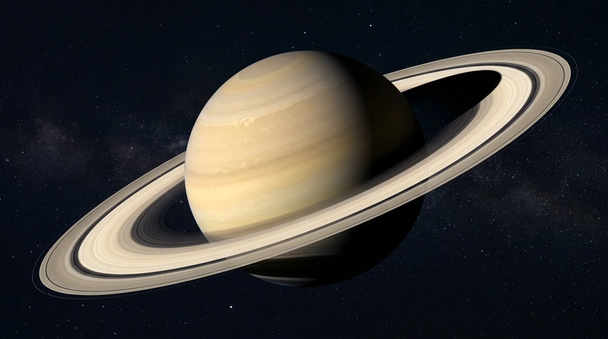

Foundational STEAM lesson for Saturn.
Saturn is the second-largest planet in the solar system, renowned for its majestic ring system. Composed of billions of fragments of almost pure water ice ranging in size from dust specks to house-sized boulders, the rings span 282,000 kilometers across yet average only about 10 meters thick.
